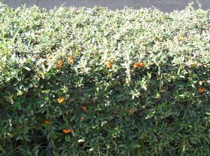
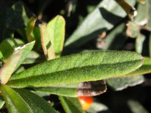
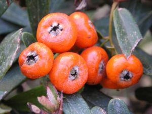

| Pyracantha
angustifolia (Franch) C. K. Schneid., Illustr. Handb.
Laubholzkunde 1: 761 (1906)
Cotoneaster
angustifolius
Franch
|
Rosáceas Dicotiledóneas |
| Espino de fuego, piracanta de hoja estrecha | Arbusto perennifolio |
|
Arbusto perennifolio, monoico, de altura 0,60 m [puede llegar a 3 m (1)], corteza de color pardo-rojizo brillante, ramillas espinosas. Hojas simples, alternas, cortamente pecioladas; lámina c. 30 x 3 mm, lineal a obovada, entera, coriácea, cubiertas por pelos blanquecinos. Inflorescencias de tipo corimbo compuesto, densas. Flores hermafroditas, regulares, de c. 8 mm, blancas; cáliz con 5 sépalos cortos, triangulares y persistentes en el fruto; corola con 5 pétalos redondeados, extendidos y estrechados en la base; 20 estambres con anteras amarillas; ovario ínfero con 5 carpelos. Florece a finales de primavera y principios de verano. Fruto globoso
tipo pomo, acompañado de cáliz persistente, color
naranja amarillento, con 5 semillas; pueden llegar
a cubrir las ramas. |
  Fotos: © Juan Viruel Sánchez, Nov.-2005 |
|  |
Observaciones:
El nombre genérico procede el griego pyro (fuego) y akantha (espina) por sus frutos rojizos que se encuentran en las ramas espinosas. Muy usado como bonsai. Es habitual encontrar esta especie formando setos junto a Pyracantha coccinea. |
| Área de origen.- China. | |
| Uso en el campus.- seto de 90 m mezclado con P. coccinea. |
Localización.- E.T.S.
Ingeniería Informática |
|
(1) Ceballos
L. & Ruiz de la Torre J. (1979). Árboles y
arbustos. Escuela Técnica Superior de Ingenieros de
Montes. |
|
|
|
|